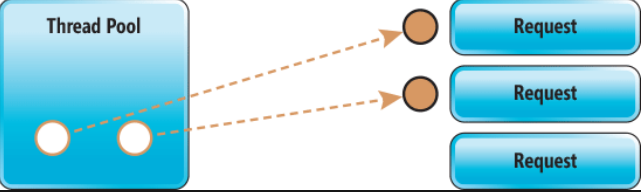
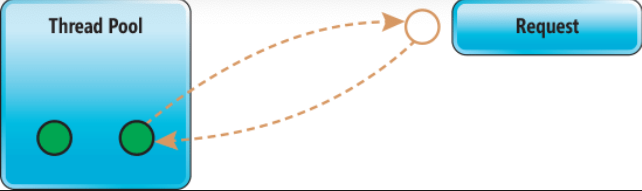

定义
什么是异步编程
Asynchrony, in computer programming, refers to the occurrence of events independent of the main program flow and ways to deal with such events.
上面是wiki中对于异步的定义，关于同步、异步、阻塞和非阻塞的更多资料，大家可以参考wiki中给出的定义。
同步、异步、阻塞和非阻塞的解释
现在我们来通过一个通俗易懂的例子，来理解一下这四个词汇的区别：
eg：比如现在A需要跟B讨论晚上吃什么
1. 同步/阻塞：A打电话给B，电话接通，两人开始讨论
2. 非阻塞：A打电话给B，没人接，然后A每隔五分钟就再次打给B
3. 异步：A打电话给B，没人接，A通过语音留言，让B给他回电话，然后A去做其他事情
通过上面的例子可以看出，通常同步和阻塞说的是一个事情，同步一定是阻塞的，而对于非阻塞和异步，在不同的场景可以有不同的解释，我们通常可以认为，异步是非阻塞的，但是非阻塞的实现形式不一定都是异步。
同步和异步工作模式的比较
那么同步和异步的工作模式到底是怎么样的，下面我通过比较熟悉的WebAPI来举例，假设我们提供了一个通过用户ID获取用户信息的API，API从数据库获取用户信息，并返回给客户端，当请求到达我们的API时，CLR会从线程池中取出一个可用线程来接收请求。下面分别看一下同步和异步接下来的处理
同步的工作模式
- 同步模式
同步的意思是整个操作串行进行，也就是说，线程1拿到请求参数，即用户ID，向数据库发起一个查询请求，然后将自己挂起，等待数据库处理，当数据库处理完成返回，线程1拿到返回的数据，返回给客户端。
在这个过程中可以看到，在数据库处理阶段，线程1处于闲置状态，此时它的CPU Time是0，直到数据库完成操作返回，线程1才继续工作，这对于线程来说是极大的浪费。
试想一下，如果我们线程池中只有两个线程，那么此时收到第三个客户端请求，会出现什么后果？不错，第三个请求会进入排队阶段，而此时另外两个线程却处于挂起状态，并没有工作要做，相当于我们的服务器在闲置状态。如下图所示：

- 缺点
通过上面的分析可以看出，同步模式有以下几个缺点：
- 线程资源浪费：线程在挂起状态时处于闲置
- CPU资源浪费：线程挂起，此时CPU Time为0
- 吞吐量低：吞吐量取决于线程池中线程的数量，如果想要增加系统的吞吐量，就不得不通过增加线程池中线程数量的手段来实现，而线程过多会造成更多的负面影响，具体可以参考扩展篇：线程创建与销毁的代价
异步的工作模式
分析完同步的工作模式，下面我们来看一下异步是怎么处理请求的。当线程1拿到请求参数，即用户ID，线程1会向数据库发起一个查询请求，然后立刻返回到线程池，并且处于可用状态，即可以继续接收其他请求；当数据库处理完成返回，CLR会从线程池中取出一个可用线程，来继续处理返回的数据。如下图所示：

显而易见，异步操作不会阻塞线程，那么系统就有空闲线程来接收更多的客户端请求，从而增大系统的吞吐量，提高CPU的利用率。
Note: 对于CLR如何处理异步I/O感兴趣的同学，可以参考扩展篇：Windows是如何处理异步I/O的
比较
先借用官方的一句话：
Asynchronous code scales both further and faster than blocking thread pool threads.
下面我们来解释以下scale further 和 scale faster的原因
- scale further
在现代操作系统上每个线程池线程具有 1MB 的堆栈，外加一个不分页的内核堆栈，如果面对高并发系统，通过增加线程数量来增加吞吐量，就会浪费很多内存开销，而对于异步来说，不需要过多的线程来处理请求，因此可以节约更多的内存空间做其他事。 - scale faster
由于线程池的注入速度是有限的，大概是每2秒一个线程，考虑一下如果突然爆发很多请求，那么请求就会将线程池中的线程全部用完，其余的请求就必须等待线程池注入新的线程。而异步代码就不会有这种烦恼，他可以更充分的利用线程池，也就是说，他可以更加灵活的响应请求数量的波动。
结论
了解了同步和异步的工作模式之后，我们可以得出结论：
- 对于CPU密集型应用，建议使用同步模式，避免线程切换带来的额外开销。
- 对于I/O密集型应用，建议使用异步模式，增加线程和CPU的利用率，也可以增大系统的吞吐量。
Note：数据库访问、Redis访问、请求第三方api以及文件读写，都属于I/O操作 - 异步不是银弹，它能够帮助你尽可能充分的利用服务器资源，达到纵向scale的能力，但是如果业务需要，仍然需要通过分布式系统进行横向scale